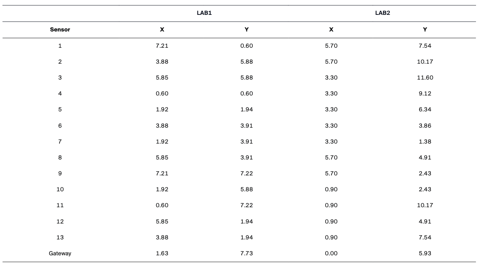
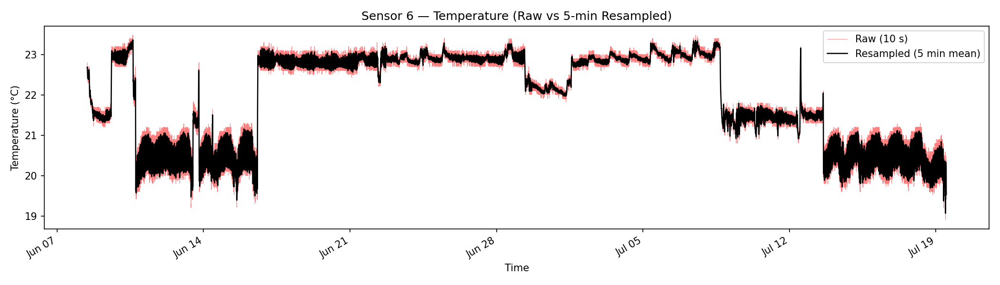
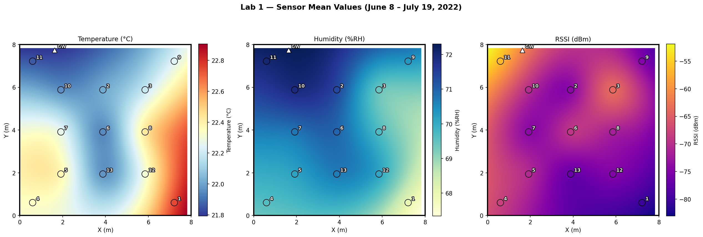
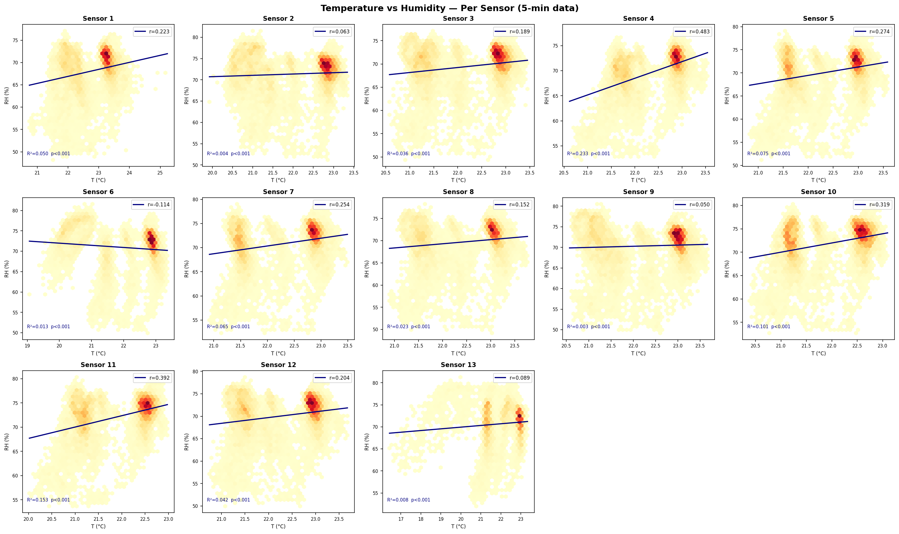
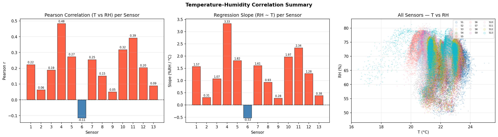
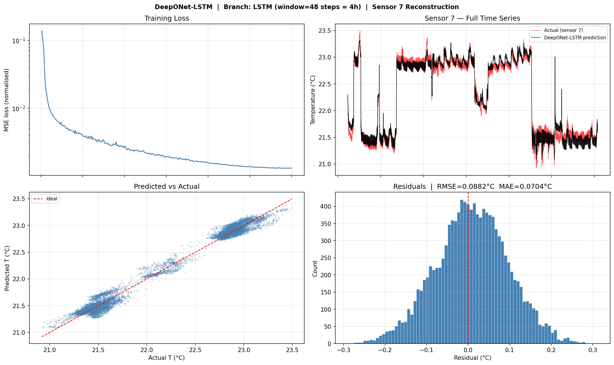
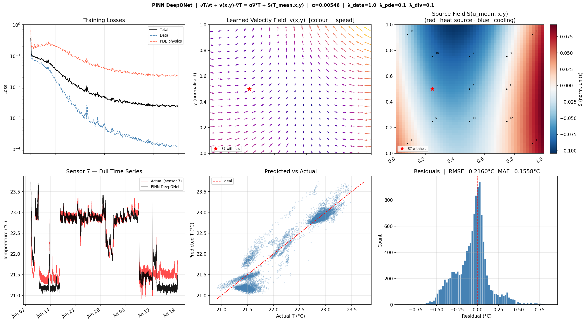
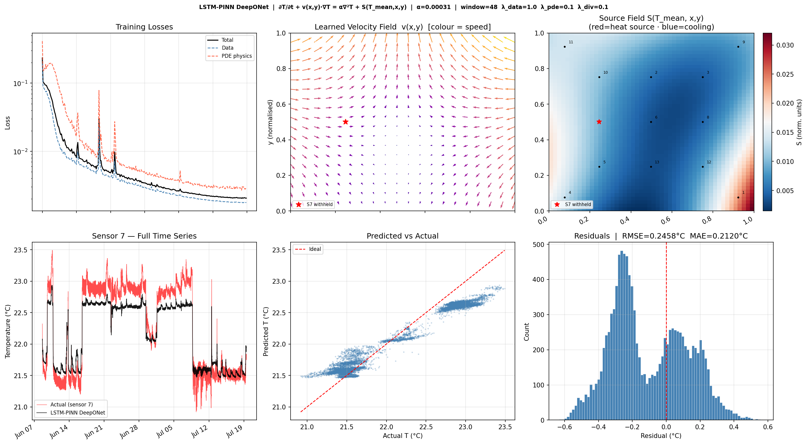
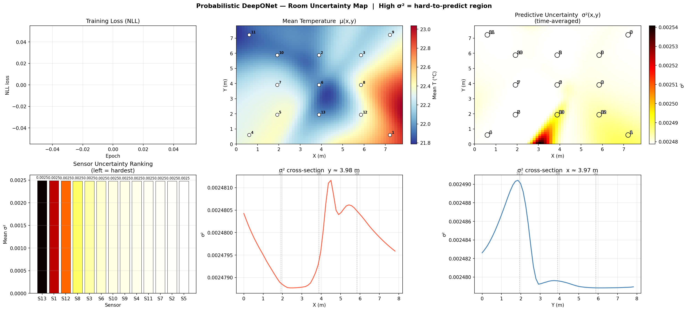
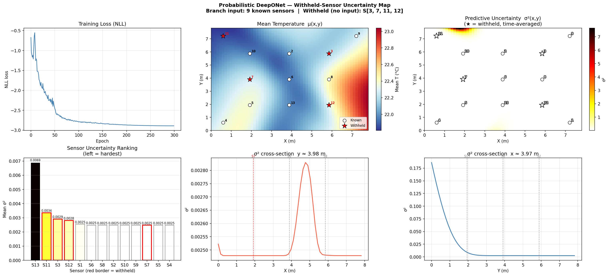

Data Source Paper.
Botero-Valencia et al., MDPI Data — "Exploring Spatial Patterns in Sensor Data for Humidity, Temperature, and RSSI Measurements."
Raw dataset available at: osf.io/zbn8w
All experiments use data collected from Lab 1, a real indoor office environment
instrumented with a wireless sensor network of 13 IoT nodes.
Each node logs temperature, relative humidity, and RSSI at approximately 10-second intervals.
The dataset covers 40 days of continuous measurements,
providing both short-term dynamics and longer seasonal drift.
13
Sensors
40
Days
~10s
Raw Sample Rate
3
Channels (T, RH, RSSI)
Lab 1 Layout. Floor plan of the instrumented room showing walls, furniture, and general sensor deployment zones.

Sensor Positions. Exact (x, y) coordinates of all 13 sensor nodes used as the trunk-net inputs for DeepONet.

Figure 1-3 — Sensor 6 Temperature Time Series. Raw 10-second measurements (gray) overlaid with 5-minute resampled means (blue). The high-frequency noise present in the raw data motivates our resampling and filtering investigations.

Figure 1-4 — Spatial Field Heatmaps. Mean Temperature (°C), Relative Humidity (%), and RSSI (dBm) across the room, interpolated from the 13 sensor positions using RBF thin-plate spline interpolation. These maps reveal the spatial gradients the model must learn to reproduce.
2
Model Architecture
Operator Network & DeepONet
What is an Operator Network?
Standard neural networks map one fixed-size vector to another. An operator network
goes one level higher: it learns a mapping between functions.
In our case, the input function is the temperature field observed at 12 sensor locations at a given time,
and the output function is the full spatial temperature field — so we can query it at any (x, y) coordinate in the room.
This means the model generalises to locations where we have no sensors,
effectively reconstructing the continuous temperature field from sparse measurements.
How DeepONet Works
DeepONet (Deep Operator Network, Lu et al. 2021) implements this idea with two coupled sub-networks:
Branch Network
Encodes the input function — the sensor readings at a fixed set of measurement locations. Produces a latent vector that summarises the current state of the room.
Trunk Network
Encodes the query location — the (x, y) coordinate where we want to predict the temperature. Produces a basis vector for that position.
The final prediction is the dot product of the branch and trunk outputs
(plus a bias), giving a single temperature value at the queried location.
By sweeping the query over a dense grid, we reconstruct the entire 2D temperature field.
Our Architecture
INPUT ├─ Branch input: 12 sensor temperatures at time t (shape: [12]) └─ Trunk input: (x, y) query coordinate (shape: [2])
BRANCH NET (MLP) 12 → 128 → 128 → 128 → p (ReLU activations) └─ output: latent vector b ∈ ℝp
TRUNK NET (MLP) 2 → 128 → 128 → 128 → p (ReLU activations) └─ output: basis vector t ∈ ℝp
OUTPUT T̂(x,y) = b · t + bias (dot product + scalar bias)
TRAINING STRATEGY ├─ Sensor 7 withheld from branch input (used as test target) ├─ Loss: MSE on withheld sensor temperature └─ Optimiser: Adam, lr=1e-3, cosine annealing
Why Sensor 7?
Sensor 7 is withheld from the branch input in all experiments. The model sees only the other 12 sensors during inference and must reconstruct the temperature at Sensor 7's (x, y) location. This simulates a real-world scenario where a sensor goes offline or is not deployed.
3
Baseline Results
Raw 10s Data vs. 5-Min Resampled Data
As a first experiment we trained two identical DeepONet models —
one on the raw 10-second data and one on 5-minute mean-resampled data —
to understand whether input noise level affects reconstruction accuracy.
Raw (10s) Training. Loss curve, predicted vs. actual time series for Sensor 7, scatter plot, and residual distribution for the model trained on high-frequency raw data.5-Min Resampled Training. Same four diagnostics for the model trained on 5-minute averages. Noise reduction in the input leads to visibly smoother predictions and lower residuals.
Figure 3-3 — Multi-Resolution Prediction Comparison. Both trained models are evaluated at four input resolutions (10s, 5min, 20min, 60min). Each row shows the predicted vs. actual time series for Sensor 7, with RMSE and MAE bar charts on the right. The resampled model generalises more robustly across resolutions.
4
Noise Analysis
Noisy Data & Savitzky-Golay Filtering
To better understand the effect of noise, we compared the raw 5-minute data with
a smoothed version produced by a Savitzky-Golay (SG) filter,
then trained a DeepONet on the filtered signal.
What is a Savitzky-Golay Filter?
The Savitzky-Golay filter is a digital smoothing technique that fits a low-degree polynomial
to a sliding window of data points using least squares, then replaces each point with the
polynomial's value at that position.
Unlike a simple moving average, it preserves the shape of peaks and edges —
important for temperature data where ramp-up and cool-down dynamics carry physical meaning.
We use a window of 21 points (~105 minutes) and polynomial order 3.
Figure 4-2 — Sensor 1: 5-min Resampled vs. SG-Filtered. The SG filter removes short-term fluctuations while following the overall temperature trend faithfully, including daily cycles.Figure 4-3 — DeepONet Trained on SG-Filtered Data. Loss curve, time series, scatter, and residuals for the model trained on smoothed inputs. Training is more stable and the residual distribution is tighter than the raw model.
5
Feature Engineering
Humidity–Temperature Correlation & PCA Feature
Temperature and humidity in a room are physically coupled — HVAC systems control both,
and occupancy affects both. We investigated whether humidity carries additional information
that could improve temperature reconstruction.

Figure 5-1 — Per-Sensor T vs. RH Scatter. Linear regression fit for each of the 13 sensors individually. Most sensors show a strong negative correlation (higher temperature → lower relative humidity).

Figure 5-2 — Pearson Correlation Summary. Bar chart of Pearson r per sensor and joint scatter. The consistently negative r values confirm a room-wide anti-correlation between T and RH.
Figure 5-3 — PCA on Humidity Signals. Scree plot (left) and PC1 time series (right). PC1 captures the dominant shared variance across all 13 humidity sensors, essentially tracking the room-level humidity mode.
What is PCA?
Principal Component Analysis (PCA) is a linear dimensionality reduction technique.
Given N correlated signals (here: 13 humidity time series), PCA finds a set of orthogonal
directions — principal components — ordered by the amount of variance they explain.
PC1 is the first principal component:
a single time series that is the linear combination of all 13 humidity channels
that explains the most variance. Because all sensors are in the same room and
strongly correlated, PC1 alone captures the dominant room-wide humidity pattern,
compressing 13 channels into 1 without losing much information.
Adding Humidity PC1 to the Model
The branch network input is extended from 12 to 13 features
by appending the humidity PC1 value at each timestep alongside the 12 sensor temperatures.
Everything else (trunk net, training procedure, withheld sensor) stays the same.
Figure 5-5 — DeepONet with Humidity PC1 as Extra Input. Adding the humidity principal component improves the model's ability to track abrupt temperature changes, reducing residual spread.
6
Sequence Modelling
LSTM Branch Network
The baseline DeepONet branch network processes a single timestep snapshot of the sensor array.
It has no memory of past states. To exploit temporal dependencies in the temperature signal,
we replace the MLP branch with a Long Short-Term Memory (LSTM) network
that encodes a sliding window of recent history.
What is LSTM?
LSTM (Long Short-Term Memory) is a type of recurrent neural network designed to learn
long-range dependencies in sequential data. Unlike a simple RNN, an LSTM cell maintains
two state vectors: a cell state (long-term memory)
and a hidden state (short-term output).
Three gates — input, forget, and output — learn to write, erase, and read from the cell state,
preventing the gradient from vanishing over long sequences.
This makes LSTMs well-suited for temperature time series, where a room's thermal inertia
means the current temperature depends on what happened in the past hour or more.
LSTM Branch Architecture
LSTM BRANCH NET ├─ Input: sliding window of 48 timesteps × 12 sensors (= last 4 hours at 5-min resolution) ├─ LSTM Layer 1: hidden_size = 128, dropout = 0.1 ├─ LSTM Layer 2: hidden_size = 128 ├─ Take last hidden state h_T ∈ ℝ128 └─ Linear projection: 128 → p (same p as trunk net output)
TRUNK NET (unchanged MLP) 2 → 128 → 128 → 128 → p
OUTPUT T̂(x,y) = b_LSTM · t_trunk + bias
KEY DIFFERENCE vs. BASELINE Branch sees 48 past timesteps instead of just the current snapshot. The LSTM learns which part of recent history matters most.

Figure 6-2 — DeepONet-LSTM Results. Loss curve, predicted vs. actual time series for the withheld Sensor 7, scatter plot, and residual distribution. The LSTM branch captures temporal dynamics that the snapshot-based MLP branch misses, leading to improved tracking of temperature ramps.
A purely data-driven model can fit sensor observations accurately but has no guarantee that its
spatial temperature field obeys the governing equations of heat transfer.
To constrain the solution to physically plausible dynamics, we add a
PDE residual loss derived from the advection-diffusion-source equation
for indoor thermal fields. The key departure from an RC-circuit approach is that this formulation
is fully continuous in space — it reasons about the temperature field at every point in the room,
not just at sensor locations.
Why Advection-Diffusion instead of a Lumped RC Model?
An RC network is a lumped model: it treats the room as a small number of discrete
zones connected by resistors. It cannot represent how heat spreads continuously across the
floor plan. The advection-diffusion PDE operates on the continuous spatial field
T(x, y, t) that the DeepONet trunk already represents, so the physics loss
directly penalises the network output at any queried coordinate — including the withheld
Sensor 7 location.
Governing Equation
The temperature field satisfies the following PDE at every interior point of the room:
ADVECTION-DIFFUSION-SOURCE PDE
∂T/∂t + v(x,y) · ∇T = α ∇²T + S(T̄, x, y)
where: T(x,y,t) = temperature field at position (x,y) at time t v(x,y) = spatially-varying air velocity field (learned by v-net) α = thermal diffusivity scalar (learned, log-space for positivity) S(T̄, x, y) = spatially-varying heat source/sink (learned by source-net) T̄ = mean sensor temperature (scalar context for S)
TOTAL TRAINING LOSS L = λ_data · L_data + λ_pde · ( L_pde + λ_div · L_div + λ_noslip · L_noslip + λ_sparse · L_sparse + λ_neumann · L_neumann )
Approximated by a finite difference between consecutive 5-minute timesteps:
model(ut+1, xy) − model(ut, xy).
Both evaluations share the same spatial coordinates; only the branch input changes.
∇T and ∇²T — Spatial Derivatives
Computed via automatic differentiation through the SIREN trunk with respect
to the input coordinates (x, y). The SIREN activation (sin(ω₀··)) guarantees
non-vanishing second derivatives everywhere, keeping the Laplacian ∇²T meaningful.
ω₀ = 5 is used (reduced from the standard 30) since thermal fields are spatially smooth —
large ω₀ causes ∇²T ~ ω₀² blow-up in the PDE residual.
Learned Physics Sub-networks
V-NET — Spatially-Varying Velocity Field Input : (x, y) [normalised room coordinates ∈ [0,1]²] Hidden : Linear(2→16) → Tanh → Linear(16→2) Output : (v_x, v_y) [air velocity at each point]
A global scalar velocity cannot represent AC-driven circulation patterns.
The v-net learns the full 2-D velocity field from data.
Kept shallow (1 hidden layer, width 16) to prevent memorising PDE residuals.
Uses only the mean temperature T̄ (not all 12 sensor readings) as temporal context.
Giving the net all 12 readings allows it to reconstruct ∂T/∂t exactly and zero the PDE
residual without learning any physics — a known failure mode called the "source fudge factor."
THERMAL DIFFUSIVITY α α = exp(log_α) — single learnable scalar, initialised at exp(−2) ≈ 0.135
Collocation Strategy
The PDE residual is evaluated at 512 collocation points per training step,
split equally between:
50 % — Sensor Locations
Randomly sampled from the 12 training sensor coordinates.
The data loss anchors the field here, so the PDE is better conditioned at these points.
50 % — Random Interior
Uniformly sampled from the room interior [0,1]².
These enforce the PDE in regions with no sensor, including the neighbourhood
of withheld Sensor 7.
Boundary Condition Losses
Without geometric constraints, spatially-varying MLPs can learn degenerate solutions —
for example, inventing wind that blows through solid walls, or room-wide heat sinks that
absorb the entire PDE residual. Four additional loss terms enforce real-world geometry:
Fix 1 — No-Slip Boundary Condition
L_noslip = ‖v(x_wall)‖²
Air velocity must be zero at solid walls. 64 points are sampled on each of the four
walls at every training step and the v-net output is penalised directly.
This prevents the learned circulation from passing through walls.
Fix 2 — L1 Sparsity on Source
L_sparse = mean(|S(x,y)|)
Real heat sources are localised (AC vents, windows).
L1 on the source output pushes S to exactly zero for most of the room,
forcing the network to concentrate heating/cooling into a small distinct region
rather than spreading a diffuse bias across the entire field.
Fix 3 — Reduced Network Capacity
v-net and source-net are deliberately shallow (1 hidden layer) and narrow
(width 16 and 32 respectively). A deeper, wider network has enough capacity to
memorise the PDE residual as a function of its inputs — effectively becoming
another fudge factor. Reducing capacity forces the networks to learn smooth,
generalisable spatial patterns instead.
Fix 4 — Neumann (Insulated Wall) Condition
L_neumann = (∂T/∂n)2 at walls
Concrete walls have low thermal conductivity, so the normal heat flux at the
perimeter is approximately zero: ∂T/∂n ≈ 0.
The normal gradient of T is computed via autograd at 64 wall points per wall
and penalised. This prevents the temperature field from developing sharp gradients
at the room boundary.
Key Design Principle — The Blind Inverse Problem
The exact AC vent locations, airflow rates, and occupancy patterns are unknown.
Rather than prescribing these from engineering drawings, the model
discovers them from data subject to physical constraints.
The no-slip and Neumann boundary conditions act as geometric priors that rule out
unphysical solutions, while the L1 sparsity and reduced capacity prevent the physics
sub-networks from finding degenerate mathematical shortcuts.
The result is a spatial field that is not only accurate at sensor locations but
physically consistent everywhere in the room.
Results

Figure 7 — Physics-Informed DeepONet Results.
Top row (left to right): training loss curves showing the data loss (blue dashed)
and PDE physics loss (red dashed) converging together;
learned velocity field v(x, y) as a quiver plot coloured by speed — arrows reflect
a leftward circulation pattern consistent with AC-driven airflow;
learned source field S(T̄, x, y) at mean thermal state showing a warm region
(red) on the right side of the room and a cooling zone (blue) on the left,
consistent with a localised heat source near sensors 1 and 9.
Bottom row: full time-series reconstruction of withheld Sensor 7 (α = 0.00546,
RMSE = 0.2160°C, MAE = 0.1558°C); predicted vs. actual scatter; residual histogram.
This result uses the SIREN trunk at ω₀ = 5 and mean-temperature-only source context.
The additional boundary condition losses (no-slip, Neumann, L1 sparsity) are implemented
in the code and will further constrain the velocity and source fields in the next training run.
8
LSTM-PINN DeepONet
LSTM-Branch DeepONet with Advection-Diffusion PINN
The previous physics section used a snapshot MLP branch — it treated every timestep
independently, with no memory of how the room arrived at its current state.
This section upgrades the branch network to an LSTM encoder,
giving the model a 4-hour sliding window of sensor history,
and combines it with a richer Advection-Diffusion-Source PDE
that simultaneously learns the air-velocity field, thermal diffusivity, and
spatial heat sources from data.
Why replace the snapshot branch with an LSTM?
A plain MLP branch encodes only the current sensor snapshot — it has no memory of
recent occupancy ramps, AC cycles, or thermal inertia.
An LSTM branch encodes the full trajectory of how the room got to its current
thermal state. This matters for two reasons:
∂T/∂t is estimated from consecutive LSTM embeddings whose hidden state
already reflects recent history — not just an instantaneous finite difference.
The velocity field v(x,y) is fitted against a model that already understands
directionality-over-time, so it converges to more physically plausible circulation patterns.
Architecture Overview
BRANCH NET — LSTM ENCODER ├─ Input: sliding window of 12 sensor temperatures over 48 timesteps (4 h) │ Shape: (batch, seq=48, n_sensors=12) ├─ LSTM: hidden=128, layers=2, dropout=0.1 between layers ├─ Take last hidden state of final layer → (batch, 128) └─ Linear projection → (batch, p=128) branch embedding b
TRUNK NET — SIREN MLP ├─ Input: normalised spatial query point (x, y) ∈ [0,1]² ├─ SIREN layers: 2 → 128 → 128 → 128 → 128 → 128 (depth=4) │ activation: sin(ω₀ · Wx + b), ω₀ = 5 │ ω₀ reduced from 30 — thermal fields are smooth; │ large ω₀ causes ∇²T ~ ω₀² blow-up in the PDE residual └─ Final linear layer (no sin) → (batch, p=128) trunk embedding t
OUTPUT T̂(x,y,t) = b · t + bias (inner product + scalar bias)
Instead of the simple heat equation used earlier, this model enforces a full
advection-diffusion-source PDE at a set of collocation points every training step:
∂T/∂t + v(x,y) · ∇T = α ∇²T + S(Tmean, x, y)
Each term has a concrete physical role:
∂T/∂t — temporal rate of change, estimated by a finite difference between
the model output at window [t−48:t] and window [t−47:t+1].
The LSTM hidden state encodes history, so these consecutive embeddings capture genuine dynamics.
v(x,y) · ∇T — advective transport by the spatially-varying air-circulation field.
v_net is a shallow MLP (2→16→2) that outputs (vx, vy)
at any room location. A soft divergence-free penalty ‖∇·v‖² ≈ 0 encourages mass conservation.
α ∇²T — diffusion. α = exp(log_α) is learned end-to-end; it starts near
e−2 ≈ 0.135 (normalised units) and converges to the physically meaningful value.
S(Tmean, x, y) — spatially-varying source/sink conditioned on the
mean sensor temperature of the last window step only. Using only Tmean
(a single scalar) as temporal context prevents the network from absorbing the full PDE residual
as a fudge factor. An L1 sparsity penalty forces S to localise into small distinct regions
(like real AC vents or equipment racks).
Derivative Computation
∂T/∂t (finite difference over LSTM windows) dT_dt = [ model(seq[t-48:t], xy) − model(seq[t-47:t+1], xy) ] / Δt Both sequences share the same spatial coords; only the LSTM history shifts by one step.
∇T (1st-order autograd through SIREN trunk) grad1 = ∂T̂/∂(x,y) via torch.autograd.grad with create_graph=True
∇²T (Laplacian via 2nd-order autograd) d²T/dx² = ∂(dT/dx)/∂x d²T/dy² = ∂(dT/dy)/∂y Laplacian = d²T/dx² + d²T/dy² SIREN activations (sin) have non-vanishing 2nd derivatives — this is why ReLU/Tanh trunks fail: their Laplacians are zero or extremely sparse.
Boundary Conditions
Four physics-motivated boundary conditions are enforced at 64 sampled wall points per edge
(256 total) each training iteration:
No-slip (Fix 1) — v(xwall) = 0.
Air velocity is zero at solid walls; penalised as ‖v_wall‖².
Neumann thermal BC (Fix 4) — ∂T/∂n = 0 at each wall (insulated boundary).
The normal gradient is extracted from autograd: ∂T/∂y for bottom/top walls,
∂T/∂x for left/right walls.
Divergence-free penalty (λ_div) — ‖∂vx/∂x + ∂vy/∂y‖²
encourages mass conservation throughout the domain (not just at walls).
Each training step draws 512 collocation points using a mixed strategy:
half (256) from the actual sensor locations (high-information zones), half (256) uniformly
random from the room interior [0,1]². This ensures the PDE residual is enforced both
where data is dense and in sparsely covered regions.
Loss Function
TOTAL LOSS L = λ_data · MSE_data + λ_pde · ( MSE_pde + λ_div · MSE_div + λ_noslip · MSE_noslip + λ_sparse · L1_source + λ_neumann · MSE_neumann )
HYPER-PARAMETERS λ_data = 1.0 (primary data-fitting objective) λ_pde = 0.1 (physics regularisation — strong enough without overwhelming data) λ_div = 0.1 (divergence-free penalty on v_net) λ_noslip = 0.1 (no-slip BC at walls) λ_sparse = 0.001 (L1 sparsity on source field) λ_neumann= 0.1 (Neumann ∂T/∂n = 0 at walls)
HARDWARE Auto-detects: Apple MPS → CUDA → CPU (MPS used on Mac M-series)
CHECKPOINTING Best epoch saved to deeponet_lstm_pinn_best.pth (lowest total loss) Final model saved to deeponet_lstm_pinn.pth
Withheld-Sensor Evaluation (Sensor 7)
Sensor 7 (location: x=1.92 m, y=3.91 m) is completely excluded from training —
it does not appear in the branch input, in the data loss, or in the collocation set.
After training, the model is queried at the sensor 7 coordinates for every valid timestep
and the prediction is compared against the true sensor 7 readings.
This tests spatial generalisation: the model must reconstruct temperature at an
unobserved location purely from the physics constraints and the 12 surrounding sensors.
Inference uses 512-sample chunks over the full time series
(first 48 timesteps are excluded as LSTM warm-up).
Predictions are de-normalised with the global mean and standard deviation from training.
Visualised Results
The 6-panel result figure provides a complete diagnostic view of the trained model:
Training losses (log scale) — total, data, and PDE physics components over 300 epochs.
Learned velocity field v(x,y) — quiver plot coloured by speed; shows the
air-circulation pattern the model discovered. Sensor positions are overlaid; sensor 7 (withheld) is
marked with a red star.
Source field S(Tmean, x, y) — heatmap of the learned heat source/sink
distribution (red = heating, blue = cooling) at the mean thermal state.
Sensor 7 full time series — predicted vs actual temperature over the 40-day dataset
(first 48 steps skipped for LSTM warm-up).
Predicted vs Actual scatter — ideal line in red; clustering around the diagonal
indicates low bias.
Residual histogram — centred near zero with RMSE and MAE annotations.

Figure 8-1 — LSTM-PINN DeepONet Diagnostic (6 Panels).
Top row (left to right): training loss curves (total, data, PDE physics) on a log scale;
learned spatially-varying velocity field v(x,y) from v_net — colour encodes flow speed,
sensor locations shown as white dots, withheld sensor 7 as a red star;
source/sink field S(Tmean, x, y) from source_net — red regions indicate
net heat input, blue regions net cooling.
Bottom row: full 40-day time-series reconstruction of withheld sensor 7 (predicted vs actual);
predicted vs actual scatter plot; residual histogram with RMSE and MAE.
Sensor 7 is excluded entirely from training — the reconstruction is driven purely by
physics constraints and the 12 surrounding sensors.
Learned Physics Parameters
After training the model reports the following learned PDE parameters:
Thermal diffusivity α — a single positive scalar (learned in log-space to
ensure positivity). The converged value reflects the effective thermal diffusivity of
the room in normalised units.
Velocity at each sensor location — (vx, vy) and speed
printed per sensor, giving a point-sample of the learned circulation field.
Key Improvements over the Snapshot PINN (Section 7)
The LSTM-PINN model differs from Section 7 in three fundamental ways:
Temporal memory: the LSTM branch encodes a 4-hour history of all 12 sensors;
the Section 7 branch encoded only the current snapshot.
Richer PDE: full advection + diffusion + spatially-varying source vs. a
simpler heat equation with learned α only.
Additional boundary conditions: no-slip for velocity, Neumann for temperature,
and L1 source sparsity are all active — physically grounding the sub-networks and
preventing unphysical solutions.
9
Uncertainty Quantification
Spatial Uncertainty Maps
Knowing how well the model knows the temperature at each room location is as important as
the prediction itself. A model that is confident everywhere — even where sensor coverage is sparse —
cannot be trusted for decision making (e.g. HVAC placement, fault detection).
We extend DeepONet to output both a mean prediction and a
predictive variance at every queried location.
What is Uncertainty Quantification?
Uncertainty quantification (UQ) means estimating not just a single prediction value but
also a confidence measure for that prediction. In a probabilistic neural network,
the model outputs the parameters of a probability distribution — here a Gaussian with
mean μ and variance σ² — instead of a single number.
A high σ² at a location signals that the model lacks confidence there,
typically because no training sensor is nearby. This spatial uncertainty can guide
decisions such as where to add new sensors to maximally reduce overall uncertainty.
Probabilistic DeepONet Architecture
PROBABILISTIC BRANCH NET ├─ Input: 13 sensor temperatures (all sensors used — no withholding) ├─ MLP: 13 → 128 → 128 → 128 → 2p (double output width) ├─ Split output into two halves: │ b_mean ∈ ℝp (mean latent) │ b_logvar ∈ ℝp (log-variance latent)
TRAINING LOSS Gaussian NLL: L = Σ [ log σ² + (T_true − μ)² / σ² ] The model is penalised for both inaccurate means and mis-calibrated variances.
Full-Coverage Uncertainty Map
In the first experiment all 13 sensors are used as branch inputs. After training,
we query the model on a dense grid spanning the entire room and plot the predicted
variance σ² at each grid point as a heatmap.
Regions with low σ² are well-constrained by nearby sensors;
regions with high σ² represent locations the model is uncertain about.

Figure 9-1 — Predictive Uncertainty Map (All 13 Sensors). Spatial heatmap of predicted variance σ² across the room when all sensors are active. Low uncertainty near sensor locations, elevated uncertainty in corners and areas with sparse coverage.
Uncertainty with Withheld Sensors
In the second experiment, 4 sensors are removed from the branch input,
simulating sensor failure or a sparser deployment.
The model receives only 9 sensor readings at inference time.
We expect σ² to spike at — or near — the withheld sensor locations,
since the model now has no direct information about those zones.

Figure 9-2 — Predictive Uncertainty Map (4 Sensors Withheld). Removing 4 sensors from the branch input causes σ² to rise at their locations, confirming the model correctly identifies its own ignorance. This property can be used to guide optimal sensor placement.
Practical Application
The uncertainty map answers the question: "If I can only afford N sensors, where should I place them?"
By iteratively adding a virtual sensor at the highest-σ² grid point and re-evaluating,
one can derive a greedy optimal sensor placement strategy purely from the trained probabilistic model —
no additional data collection required.